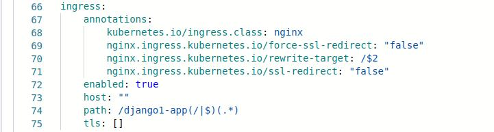

Connect Django With Mysql Database
Introduction
Django is a free, open-source web framework written in Python programming language. It allows for scalability, re-usability, and rapid development. Django can be connected to different databases like MySQL, PostgreSQL, etc.
1. Deploy a mysql Helm Chart
To deploy mysql Helm Chart, you can refer to our documentation on Deploy mysql Helm Chart
2. Fork the Git Repository
For this example, we are using the following GitHub Repo, you can clone this repository and make following changes in the files.
* Configure Database Settings
Go to mysite/settings.py.
The settings.py contains the configuration for your SQL database. Make sure the configurations in settings.py matches the configurations of the mysql Helm Chart, that you have deployed in Step 1.
DATABASES = {
'default': {
# If you are using Cloud SQL for MySQL rather than PostgreSQL, set
# 'ENGINE': 'django.db.backends.mysql' instead of the following.
'ENGINE': 'django.db.backends.postgresql',
'NAME': '<mysql-database>',
'USER': '<mysql-user>',
'PASSWORD': '<mysql-password>',
'HOST': '<service-name>',
'PORT': '3306',
}
}
3. Create Application on Devtron
To learn how to create an application on Devtron, refer to our documentation on Creating Application
* Git Material
In this example, we are using the url of the forked Git Repository.
* Docker configuration
Give, the path of the Dockerfile.
* Configure Deployment Template
Enable Ingress, and give the path on which you want to host the application.

* Set up the CI/CD Pipelines
Set up the CI/CD pipelines. You can set them to trigger automatically or manually.
* Trigger Pipelines
Trigger the CI Pipeline, build should be Successful, then trigger the CD Pipeline, deployment pipeline will be initiated, after some time the status should be Healthy.
4. Final Step
Check the Django app connected to mysql database, running successfully by hitting your application url.
The syntax is: http://<hostname>/<path>/
path will be the one that you have given in Step 3 while configuring the Deployment Template.